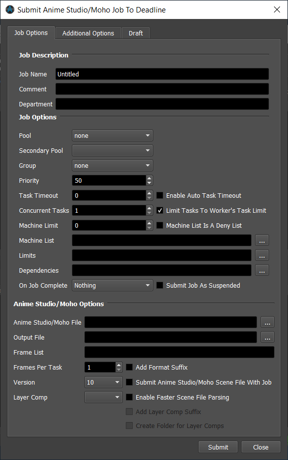
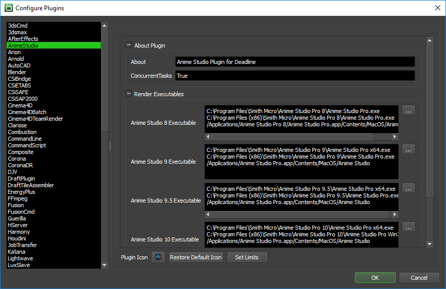

Moho (Anime Studio)¶
Note: Moho was formerly called Anime Studio, which is the Moho plugin and job submitter is still called Anime Studio.
Job Submission¶
You can submit Moho and Anime Studio Standalone jobs from the Monitor.
Submission Options¶
The general Deadline options are explained in the Job Submission documentation, and the Draft/Integration options are explained in the Draft and Integration documentation. The Moho and Anime Studio specific options are:
Anime Studio/Moho File: The scene file to be rendered.
Output File: The path to where the rendered images will be saved.
Add Format Suffix: If this option is enabled, the format name will be appended to the file name of the output path. Version 9.5 and later.
Version: The version of Moho or Anime Studio to render with.
Layer Comp: Render a specific layer comp, or select All to render all layer comps to separate files.
Enable Faster Scene File Parsing: If this option is enabled, a faster, but experimental, method is used to parse the scene file.
Add Layer Comp Suffix: If this option is enabled, adds a layer comp suffix to the rendered file name(s).
Create Folder for Layer Comps: If this option is enabled, the rendered file(s) will be created in a subfolder of the output path. The subfolder’s name will be the layer comp name.
Additional Options:
Antialiased Edges: Normally, Anime Studio renders your shapes with smoothed edges. Uncheck this box to turn this feature off.
Apply Shape Effects: If this box is unchecked, Anime Studio will skip shape effects like shading, texture fills, and gradients.
Apply Layer Effects: If this box is unchecked, Anime Studio will skip layer effects like layer shadows and layer transparency.
Render At Half Dimensions: Check this box to render a smaller version of your movie. This makes rendering faster if you just want a quick preview, and is useful for making smaller movies for the web.
Render At Half Frame Rate: Check this box to skip every other frame in the animation. This makes rendering faster, and results in smaller movie files.
Reduced Particles: Some particle effects require hundreds of particles to achieve their effect. Check this box to render fewer particles. The effect may not look as good, but will render much faster if all you need is a preview.
Extra-smooth Images: Renders image layers with a higher quality level. Exporting takes longer with this option on.
Use NTSC-safe Colors: Automatically limits colors to be NTSC safe. This is only an approximation - you should still do some testing to make sure your animation looks good on a TV monitor.
Do Not Premultiply Alpha Channel: Useful if you plan to composite your Anime Studio animation with other elements in a video editing program.
QT Options:
Video Codec: The video codec (leave blank to not specify one). Version 10 and later.
Quality: The quality of the export. Version 10 and later. 0 = Minimum, 1 = Low, 2 = Normal, 3 = High, 4 = Max, 5 = Lossless
Depth: The pixel depth of the export. Version 10 and later.
iPhone/iPad Movie Options:
Format: The available formats for m4v movies.
AVI Options:
Format: The available formats for avi movies.
SWF Options:
Variable Line Widths: Exports variable line widths to SWF.
Plugin Configuration¶
You can configure the Moho/Anime Studio plugin settings from the Monitor. While in power user mode, select Tools -> Configure Plugins and select the Anime Studio plugin from the list on the left.
Note, if the executable supports a MAJOR.MINOR.REVISION (9.0.123) numbering system in its path, then you will need to configure the explicit exe path to the particular revision that you have installed on your machines. Deadline does not track every possible revision available or indeed where it might be custom installed to, so a studio should verify their exe paths are correct for each application version they choose to use with Deadline. Multiple exe paths can still be declared and the first one that is found on a particular Worker on a particular platform will be used from the exe list.
Render Executables
Anime Studio Executable: The path to the Anime Studio executable file used for rendering. Enter alternative paths on separate lines. Different executable paths can be configured for each version installed on your render nodes.
FAQ¶
Which versions of Moho and Anime Studio are supported by Deadline?
Moho/Anime Studio 8 and later are supported.
Error Messages And Meanings¶
This is a collection of known Moho/Anime Studio error messages and their meanings, as well as possible solutions. We want to keep this list as up to date as possible, so if you run into an error message that isn’t listed here, please visit the Thinkbox Help Centre and let us know.
Currently, no error messages have been reported for this plugin.

{kind=link}
{kind=link}